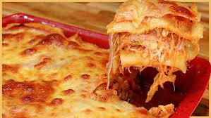

Receitas
Isca de Frango Crocante
Ingredientes:
- 500g de peito de frango cortado em tiras
- Suco de 1 limão
- 2 dentes de alho picados
- 1 colher de chá de sal
- 1/2 colher de chá de pimenta-do-reino
- 1 colher de chá de páprica (opcional)
- 1 xícara de farinha de trigo
- 1 xícara de farinha de rosca (ou panko para mais crocância)
- 2 ovos batidos
- Óleo para fritar
Modo de Preparo:
- Tempere as tiras de frango com o suco de limão, alho, sal, pimenta e páprica. Deixe marinar por 15 minutos.
- Passe cada tira na farinha de trigo, depois no ovo batido e, por último, na farinha de rosca.
- Aqueça o óleo em fogo médio e frite até ficarem douradas e crocantes.
- Retire e escorra em papel-toalha.
Tábua de Frios

Ingredientes:
- 200g de queijo muçarela
- 200g de queijo provolone
- 200g de presunto ou salame
- 100g de azeitonas
- 100g de castanhas ou nozes
- Uvas e morangos para decorar
- Pães e torradas
- Geleia de pimenta ou mel
Modo de Preparo:
- Corte os queijos e embutidos em cubos ou fatias.
- Organize os ingredientes em uma tábua, distribuindo de forma equilibrada.
- Acrescente frutas, castanhas e acompanhamentos.
- Sirva com pães e torradas.
Salpicão
Ingredientes:
- 2 peitos de frango cozidos e desfiados
- 1 cenoura ralada
- 1 lata de milho verde
- 1 lata de ervilha
- 100g de uva-passa
- 1 maçã picada
- 1 pote de maionese
- Batata palha para decorar
Modo de Preparo:
- Misture todos os ingredientes em uma tigela.
- Adicione a maionese e misture bem.
- Leve à geladeira por 1 hora antes de servir.
- Finalize com batata palha por cima.
Lasanha de Frango com Bacon

Ingredientes:
- 500g de massa para lasanha
- 2 peitos de frango cozidos e desfiados
- 200g de bacon picado
- 1 cebola picada
- 2 dentes de alho picados
- 1 lata de molho de tomate
- 200g de queijo muçarela
- 200g de presunto
- 1 copo de requeijão
Modo de Preparo:
- Refogue o bacon, a cebola e o alho até dourar.
- Adicione o frango desfiado e o molho de tomate.
- Monte a lasanha intercalando massa, frango, presunto, queijo e requeijão.
- Repita as camadas e finalize com queijo.
- Leve ao forno a 180°C por 30 minutos.
Risoto de Camarão

Ingredientes:
- 300g de camarão limpo
- 1 xícara de arroz arbóreo
- 1 cebola picada
- 2 dentes de alho picados
- 1/2 xícara de vinho branco seco
- 1 litro de caldo de legumes
- 100g de queijo parmesão ralado
- 2 colheres de sopa de manteiga
Modo de Preparo:
- Refogue a cebola e o alho na manteiga.
- Adicione o arroz e refogue por 2 minutos.
- Acrescente o vinho e mexa até evaporar.
- Adicione o caldo de legumes aos poucos, mexendo sempre.
- Quando o arroz estiver quase cozido, adicione os camarões e o parmesão.
Camarão na Abóbora
Ingredientes:
- 1 abóbora moranga
- 500g de camarão limpo
- 1 cebola picada
- 2 dentes de alho picados
- 1 lata de creme de leite
- 1 copo de requeijão
- Sal e pimenta a gosto
- Azeite para refogar
Modo de Preparo:
- Corte a tampa da abóbora e retire as sementes.
- Asse a abóbora por 40 minutos.
- Refogue a cebola, o alho e o camarão no azeite.
- Misture o creme de leite e o requeijão.
- Recheie a abóbora com o creme de camarão e leve ao forno por mais 15 minutos.
Tilápia Assada
Ingredientes:
- 4 filés de tilápia
- Suco de 1 limão
- 2 dentes de alho picados
- Sal e pimenta a gosto
- 2 colheres de sopa de azeite
- 1 ramo de alecrim
Modo de Preparo:
- Tempere os filés com limão, alho, sal e pimenta.
- Deixe marinar por 15 minutos.
- Disponha os filés em uma assadeira e regue com azeite.
- Asse a 180°C por 20 minutos.
Macarrão à Bolonhesa
Ingredientes:
- 500g de macarrão espaguete
- 300g de carne moída
- 1 cebola picada
- 2 dentes de alho picados
- 1 lata de molho de tomate
- Sal e pimenta a gosto
- Azeite para refogar
- Queijo parmesão ralado
Modo de Preparo:
- Cozinhe o macarrão conforme as instruções da embalagem.
- Refogue a cebola e o alho no azeite.
- Adicione a carne moída e cozinhe até dourar.
- Acrescente o molho de tomate e deixe cozinhar por 10 minutos.
- Misture o molho ao macarrão e sirva com queijo ralado.